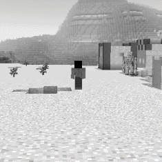
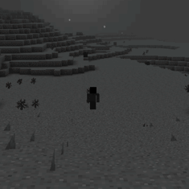
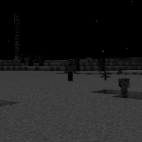
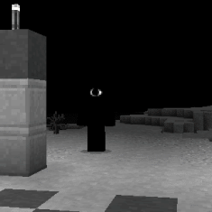
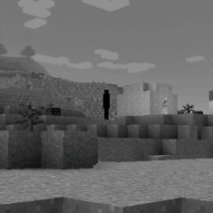
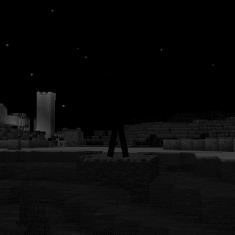
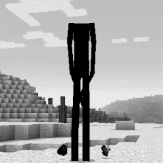

During the runtime of an infected copy, various entities in the form of mobs will start appearing in the vicinity of players in the Overworld. These entities, dubbed "Stalkers", will observe players from a distance, affect the world around them and especially during night time, will attempt to take the players into the Wonderland. These entities are to be considered dangerous, and should not be approached without proper assessment. Their nature, goals, intentions and origins are all not known. Their intelligence, appearence, personality and actions vary. Stalkers tend to appear more frequently and act more agressively with each successful escape from the Wonderland. After the first contact with the Wonderland, players running the affected savefile should up their ante and make sure they are prepared. Vigilance is always adviced.



A default Steve skin with a black square covering it's face. It is one of the few entities that can communicate. Speaking in reverse, it tends to act more friendly compared to the other entities and can be seen asking for help. Despite it's demeanor, it is not to be trusted. The last image is believed to be the Nameless One without the black censoring, but it is not confirmed as the entity never approached nor spoke.
NAME: Nameless One

A pitch black humanoid with a single giant eye covering it's face. It slowly approaches the player.
NAME: Sentinel
A white entity levitating far up the sky resembling an angel. It slowly approaches the player. Once it gets close enough, it dispositions them high in the sky and gives them the Slow Falling effect.
No reports of causing harm.
[IMAGE UNAVAILABLE]
NAME: Angel


A tall and thin humanoid with black exterior. It slowly chases the player. It can materialize cobblestone in order to avoid obstacles and close gaps.
NAME: Lankman

A tall deformed humanoid with no head. It has only ever been sighted once. It did not attack when approached. Largely unknown.
NAME: ---